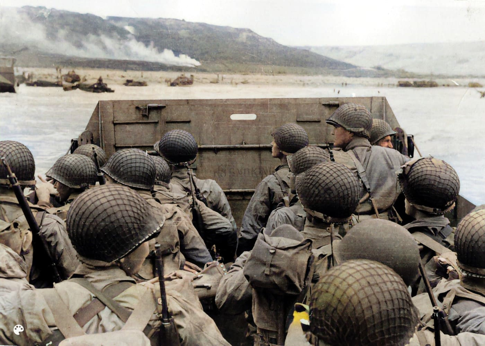

Militaria de collection, entre collectionneurs Confiez-nous vos pièces d'histoire.
Athena Militaria est la place de marché française dédiée aux collectionneurs de militaria. Un lieu d'expertise, où chaque pièce raconte un fragment d'histoire, de la Révolution à la Guerre froide.
Derniers articles mis en ligne

Plaque identité ww1 plaque belges
40 €

CASQUE US WW2 D'ORIGINE
300 €

MASQUE A GAZ ALLEMAND COMPLET WW2
130 €

Livre sur la détection des reproductions des insignes de combat du IIIeme Reich
75 €

Casque à pointe
400 €

Belle Dague C.Jul. Herbetz acier inoxidable lame avec motifs Damas
100 €

Caisses militaire françaises d’origine, modèle 1956
250 €
Guides du collectionneur
Tous les guides-
01
Qu'est-ce que le militaria ? Définition, périodes, règles
Le militaria : les objets militaires devenus objets de collection, casques, uniformes, médailles, insignes, papiers. Ce qu'on collectionne, ce que la loi encadre.
Lire le guide -
02
Commencer une collection de militaria sans se tromper
Choisir un thème, fixer un budget, apprendre avant d'acheter, documenter chaque pièce : les règles qui évitent les erreurs coûteuses des premiers achats.
Lire le guide -
03
Où acheter du militaria, et comment s'y prendre à chaque endroit
Bourses et salons, ventes aux enchères, antiquaires et armureries, brocantes, sites d'annonces : ce qu'on y trouve, ce qu'on y paie, et les réflexes à avoir.
Lire le guide
Voir les 24 autres guides
-
04
Héritage militaire : par où commencer, dans quel ordre
Médailles, casque, uniforme, papiers d'un grand-père : ce qu'il ne faut surtout pas faire, puis comment les identifier, les conserver et les vendre.
Lire le guide -
05
Vendre du militaria en France : ce qui est permis, ce qui ne l'est pas
Médailles, casques, baïonnettes, armes neutralisées, munitions inertes : ce qui se vend librement, ce qui est interdit, et quoi vérifier avant de publier.
Lire le guide -
06
Reconnaître une reproduction ou un faux : la méthode en sept points
Une reproduction vieillie trompe l'oeil, pas la méthode. Sept vérifications concrètes pour distinguer une pièce d'époque d'une copie avant d'acheter.
Lire le guide -
07
Identifier une médaille française de la Grande Guerre
Croix de guerre, médaille militaire, commémorative, interalliée, Verdun : reconnaître les décorations françaises de 14-18 et ce qui fait leur valeur.
Lire le guide -
08
Identifier un casque Adrian modèle 1915
Casque Adrian de la Grande Guerre : combien de pièces, quel cimier, quel attribut, quelle coiffe. Le distinguer du modèle 1926 et des copies.
Lire le guide -
09
Entretenir cuir, textile et métal militaires : la règle du minimum
Cuir sec, laine mitée, métal rouillé : ce qu'il faut faire, ce qu'il ne faut surtout pas faire, et pourquoi ne rien faire est souvent la bonne décision.
Lire le guide -
10
Estimer la valeur d'un casque Adrian
Quel prix pour un casque Adrian 14-18 ? Aucune cote officielle : les six critères qui creusent l'écart, et la méthode pour trouver un ordre de grandeur honnête.
Lire le guide -
11
Identifier et dater un insigne militaire français
Le dos d'un insigne en dit plus que sa face : fabricant, attache, homologation. La méthode pour situer une frappe et repérer une refrappe récente.
Lire le guide -
12
Lire une croix de guerre 1914-1918
Millésime du revers, étoiles et palmes, rubans remplacés : ce qu'une croix de guerre 14-18 raconte réellement, et comment retrouver son titulaire.
Lire le guide -
13
Identifier un casque allemand de 1935 à 1945
Le bord, les aérations et les marquages du bavolet séparent les trois modèles en une minute. Et pourquoi les décalcomanies sont le plus souvent refaites.
Lire le guide -
14
Identifier une baïonnette française
Chassepot, Gras, Lebel, Berthier, MAS 36 : la forme de la lame et le système de fixation donnent le modèle, les numéros disent si l'ensemble est d'origine.
Lire le guide -
15
Munitions anciennes : la conduite à tenir
Un siècle sous terre ne rend pas une munition inerte. Comment reconnaître ce qui est dangereux, qui appeler, et ce qu'on a le droit de garder.
Lire le guide -
16
Dater un uniforme militaire français
Le tissu donne l'époque, l'étiquette intérieure donne l'année, les pattes de col donnent l'unité. Les quatre endroits à regarder, dans l'ordre.
Lire le guide -
17
Lire et conserver des photographies et documents militaires
Le dos d'une carte postale date le tirage, le livret militaire ouvre les archives. Comment identifier un soldat, et conserver des documents sans les détruire.
Lire le guide -
18
Lexique du militaria
Bombe, cimier, poinçon, refrappe, brochage, fourragère : les mots employés dans les annonces et les expertises, définis en une phrase chacun.
Lire le guide -
19
La médaille militaire : la reconnaître, la dater, retrouver son titulaire
Aigle ou trophée, émail, poinçons, brevet : dater une médaille militaire, retrouver son titulaire et comprendre ce qui fait sa valeur.
Lire le guide -
20
Estimer un objet militaire : la méthode, de l'identification au prix
Médaille, casque, uniforme, baïonnette, papiers : comment connaître la valeur réelle d'un objet militaire, où relever les prix, et quels pièges éviter.
Lire le guide -
21
La Légion d'honneur : reconnaître le grade, dater la croix, retrouver le titulaire
Chevalier, officier, commandeur ; Empire, monarchie ou République : dater une croix de la Légion d'honneur, retrouver son titulaire, situer sa valeur.
Lire le guide -
22
Retrouver les décorations d'un soldat de 14-18
Croix de guerre, médaille militaire, Légion d'honneur : aucune liste unique des décorés de 14-18. Fiche matricule, Journal officiel, Léonore : où chercher.
Lire le guide -
23
La médaille commémorative de la Grande Guerre et la médaille interalliée
Ruban blanc rayé de rouge, arc-en-ciel de la Victoire : reconnaître les deux médailles reçues par tous les poilus, dater une frappe, retrouver le titulaire.
Lire le guide -
24
Lire une plaque d'identité militaire et retrouver le soldat qui l'a portée
Plaque ovale de 1881, plaque sécable de 1918, disques alliés et allemands : ce que chaque mention veut dire, et comment remonter du matricule jusqu'à l'homme.
Lire le guide -
25
Identifier et dater un casque à pointe allemand, du modèle 1842 au modèle 1915
Modèles 1842 à 1915, plaques des États, tampons BA, cocardes, jugulaires, pointe démontable : la méthode pour reconnaître, dater et juger un casque à pointe.
Lire le guide -
26
La médaille de Verdun : reconnaître ses types, lire son diplôme, juger sa valeur
Insigne créé par la ville de Verdun en novembre 1916, jamais officiel : types Vernier, Prud'homme, Révillon, Augier, ruban, agrafe, diplôme du Livre d'Or, valeur.
Lire le guide -
27
La croix du combattant : ce qu'elle dit d'un aïeul, et où retrouver sa carte
Loi de 1930, dessin de Doumenc, ruban bleu horizon à raies rouges, croix 1939-1940, croix du combattant volontaire : lire la croix, retrouver la carte aux archives.
Lire le guide